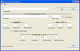

Tymeac Queue Maintenance,
com.tymeac.client.jframe.TyQueMaint
This is the means to add, change and delete Tymeac Queues.
This Class requires a Data Base Management System and a Queue Table set up according to this.
This Class requires the Configuration Data so that it may find the DBMS names.
 (click to link to full image)
{kind=link}
Elements
Queue Name -- This is a String. Any unique sequence.
Processing Application Class Name -- The name of the user-written Processing Application Class the Tymeac Queue Thread or Output Agent Thread invokes to process the user request. For names with URL's, see the naming and URL document.
This class must have a public static main() method that accepts an array of Objects and returns an Object:
public static Object main(Object[] args)
This also means that other methods used by main() must be static. See the section on classes in Developing your System. There are no other restrictions for methods in this class or for inheritance.
The single Object passed to this method is the input data in the parameter used to remotely invoke Tymeac, TymeacParm.
The returning Object may be null. For an Output Agent Class, described next, the return Type may be void.
The Demonstration classes (Demo*), are examples.
Timeout Value -- The time, in seconds GREATER THAN ZERO, the Processing Application Class may execute before Tymeac believes the Class may be stalled. ZERO is to use the system default.
For the majority of cases, the system default is sufficient. If the need arises, then this field is available to adjust the processing needs of individual Queues. This value is dynamically alterable in the QueData GUI.
Tymeac is a process NOW system. Tymeac keeps track of the time this Class begins executing. When that time exceeds this value, then Tymeac marks the thread in which this class is executing as "cancelled". When next the Monitor runs, it marks the thread as "disabled." If the thread resumes processing, the thread resets the entry, irrespective of any prior setting. These status codes have to do with scheduling. A thread with a status of "cancelled or disabled" may not participate in scheduling.
When all threads have a status of "cancelled or disabled", then the Queue is no longer functional (Scheduling failure). One must determine the cause of the stall, repair the faulty component and enable the "disabled" threads.
Enabling disabled threads brings up another issue. Perhaps the application is taking a really long time. Perhaps it will continue eventually. When an administrator "enables" the disabled threads in a Queue, that person is declaring the hanging threads expunged. If the thread eventually continues execution and determines it was expunged, it terminates immediately without completing the request. A terminating expunged thread does write a message to the log and console (Normal, Output Agent.)
Output Agent - Not checked is No / Is checked is Yes -- Yes - designates this an Output Agent Queue for Asynchronous Requests.
Processing is much different for an Output Agent. This is the Queue that receives the combined output of all the other Queue's in a Tymeac Function, for an Asynchronous Request. When the last Queue in the Function's List of Queues finishes processing and there is an Output Agent Queue for this Function, then Tymeac schedules that Agent passing it the concatenated output of the List of Queues.
To see this in action use the Demonstration System.
Modify Class DemoAgent1 main() by un-commenting the System.out.println(S). Run a command line Class, TymeacClient_7. The console output shows the result.
This Queue does not receive input directly from a Tymeac Client Request. Therefore, an Output Agent Queue cannot have prioritized Wait Lists. All requests go into Wait List 1.
A Tymeac Function TyFuncMaint cannot specify an Output Agent Queue (set here with Yes) as part of the List of Queues associated with the Function. A Tymeac Function may only specify an Output Agent Queue (set here with Yes) as the Output Agent Queue for a Function.
There is no restriction on the Processing Application Class for the Queue, above. The Class, Foo, may be the Processing Application Class for normal Queue "Working 1" as well as the Output Agent Queue "Dynamic Session 201". Classes do their work irrelevant to the environment. They take an input Object, do that which is necessary, and optionally return an Object.
Threads
Nbr of Threads -- The maximum number of threads for this Queue.
This number is significant for the requirements of the Queue as well as the overall system. See the section on Tuning.
"TyQ-" plus
When the Queue Name is <= 36 characters, the full Queue Name. Otherwise, the first 32 characters of the Queue Name, an underscore, and the last 3 characters of the Queue Name. (Certainly, this does not ensure total uniqueness for all situations. However, totally unique Queue Thread names are not always necessary.)
Followed by a dash, and a sequence number (Id) beginning with zero.
For the Demonstration System, Queue 'AAAA', with three Threads, the names are:
TyQ-AAAA-0
TyQ-AAAA-1
TyQ-AAAA-2For a Queue Name,
"ThisQueueNameIsLongerThanThirySixxxxxxxxxxxxxx{...}xxAAA",
with three Threads:
TyQ-ThisQueueNameIsLongerThanThirtySixxxxxxx {...} xxxxxxxxxxx_AAA-0
TyQ-ThisQueueNameIsLongerThanThirtySixxxxxxx {...} xxxxxxxxxxx_AAA-1
TyQ-ThisQueueNameIsLongerThanThirtySixxxxxxx {...} xxxxxxxxxxx_AAA-2See also the section on all the thread names.
The Thread Id is also found in the Thread status display, TyQueThd, and in the statistics for the Queue, TyStats.
Idle Wait Time -- The time, in seconds, the Queue Thread remains waiting for work and selectable. When this time expires, the Thread changes its status to 'inactive', that is, not directly selectable.
Tymeac will only activate this Thread again when:
- the Wait Lists exceed a Threshold limit (below),
- on an overflow condition, or
- when no Threads are active.
This parameter is difficult to understand without an example. We provide such an example in the section on Maximum Active Threads in Tuning.
Idle Thread Life -- When non-zero, the time, in seconds, a thread remains alive in an inactive state (see above Idle Wait Time). When this time expires, the Tymeac Monitor informs the Thread to destroy (return in the run() method). When zero, the Tymeac Monitor ignores this field.
Tymeac must instantiate a new thread and start() it when activating this Thread. See the section on Tuning.
Initially Start Threads - Not checked is No / Is checked is Yes
No - Each thread is instantiated and started only when needed.
Yes - All threads are started at Tymeac Startup.Number of Wait Lists -- Minimum one. This is the total number of FIFO Wait Lists associated with this Queue. See the product article describing Wait Lists.
Waitlist 1, is priority 1.
Waitlist 2, is priority 2, etc.
The requestor specifies the priority of the request in the object passed to the Tymeac Server, TymeacParm. The request goes into the bounded Wait List corresponding to the priority, unless that Wait List is physically full (much more on this below.)N.B. Each wait lists is a ConcurrentLinkedQueue. There is no way to guarantee that 'a few more than the maximum' do not get added. In a heavily used asynchronous environment, many threads could get the current size as less than the maximum and then add requests that push the size over the maximum specified here.
A no space available condition places the pending request into the next higher Wait List. This is an overflow. See the discussion below in examples.
Invalid priorities resolve as follows:
- < 1 resolves to 1
- > max resolves to max
Number of Physical Entries in Each Wait List -- Minimum one. This is the total number of entries or slots in each Wait List.
This is a fixed number for all Wait Lists in this Queue. Multiply this number by the total number of Wait Lists for the total available entries for the Queue. This number is dynamically alterable in the Queue Data GUI/non-GUI.
There are two problems with Wait Lists.
There is a FIFO problem. When an overflow occurs, Tymeac puts the request into the next Wait List that has a free slot. (E.G. Wait List 1 is full, the request goes into Wait List 2.) Tymeac processes requests in Wait Lists from the first onward. Therefore, when a slot opens in Wait List 1, a new priority 1 request goes in Wait List 1. That means this new request will process before the previous request that overflowed into Wait List 2.
When the Wait Lists are used as priority lists, then the above FIFO problem may become a priority inversion problem if there were pending requests already in Wait List 2 (the new request goes in after the other requests in the list.)
Tymeac's answer to the above problems is to have the physical number of elements in each Wait List as large as feasible. The Queue adds elements by chaining a new Node object to the list. Therefore, there is no memory overhead by specifying this number large. Making the number large avoids overflow exceptions. Bounding Wait Lists prevents an out of memory error.
When there is a problem with processing, the number of pending requests back up. A 'no wait list available' condition is preferable to an out of memory error.
Therefore, make this number as large as practical so that overflows only occur when there is truly a problem with processing.
A large number of physical slots would invalidate the use of thresholds. Therefore, we also have logical slots.
Number of Logical Entries in Each Wait List -- Minimum one. This is the number of entries or slots in each Wait List for Threshold processing.
Default: Same as physical entries. Therefore, you need to enter a number here.
This is a fixed number for all Wait Lists in this Queue. This number is dynamically alterable in the Queue Data GUI/non-GUI.
As noted above, a large number of physical slots in Wait Lists helps overcome FIFO errors but makes thresholds unusable.
Logical entries are the number of entries Tymeac considers for threshold processing only. Think of logical as the normal top load on a Queue.
For example:
A Queue should not have more then 20 requests pending at any time. Make the logical size 20 and to be extra, extra safe, make the physical size 60.
When not using priority Wait Lists we could have two Wait Lists with a physical number of slots at what we believe to be the maximum number of pending requests on this Queue plus 20% more just in case.
If there is a temporary problem and requests back up more then this limit, then request overflow into the second Wait List. This may cause a FIFO error but it is better then rejecting new requests. If the problem is not temporary, then both Wait Lists fill up and new requests reject.
We can still use thresholds since we can set the logical entries at what we believe to be normal maximum number of pending requests.
We could have a single Wait List with double the physical slots but we would not get statistics for the number of times the pending requests exceeded a limit. Tymeac keeps a high water mark on each Wait List but that doesn't say how many times the pending requests got there. Tymeac keeps statistics on overflows.
Total number of Wait Lists and number of physical and logical slots in each Wait List, are dependent upon the application. See the discussion of Wait Lists in the examples below.
Tymeac provides every opportunity to ensure the system is fully tunable. The fields below determine when to activate a new Thread. (See also the threshold scan delay in tuning.)
Thresholds depend on the number of logical entries in a Wait List. Physical entries play no part here.
OVERALL %: Format as below.
INDIVIDUAL %: Format as below.
WEIGHTED FACTOR: Format as below.
WEIGHTED AVERAGE: Format as below.
This format changed in Release 4.0.3. Before you had to enter the zero and decimal (0.) as part of the number.
The format is any number of digits as a percentage. Tymeac stores the number as a fraction in a floating point number. E.G., for 25 percent, enter 25, Tymeac stores the number as 0.25F, for 5 percent, enter 05, Tymeac stores the number as 0.05F.
N.B. The numbers are entered as decimal. Conversion from decimal fractions to binary is imprecise (the nature of the beast.) Precision is unimportant. It's very close, that's what's important.
The basis of a Weighted Factor is that a priority 1 is more significant than a priority 2, etc. Tymeac multiplies the Weighted Factor by the reciprocal (i.e., 1/x) of the Wait List number and rounds up the product. When there are three Wait Lists, with a Weighted Factor of five percent (05), then the Weighted Factor assigned to each list is:
reciprocal * factor + .005 (rounding)Wait List 1 reciprocal (1/1) is 1.000*.05 + .005=.055.
Wait List 2 reciprocal (1/2) is 0.500*.05 + .005=.030.
Wait List 3 reciprocal (1/3) is 0.333*.05 + .005=.021
Tymeac activates a new Thread when a Thread is available and the condition, described below, occurs:
1. No Thread is actively processing or about to process the Queue. About to process is a Queue Thread status of 'activated' or 'notified'. See display, TyQueThd.
2. The entry of a request into the Wait List results in an overflow. When the requesting Wait List is full, the request goes into the next available Wait List. This is an overflow.
This brings us into Threshold Processing
3. When the percentage of active entries in all Wait Lists, to total Wait List logical entries, exceeds the Overall Percent. The total number of entries is the total Wait Lists multiplied by the logical number of entries in a list (all Wait List for the Queue have the same number of logical entries.)
4. When not specifying a Weighted Factor -- only considering the intended Wait List. When the percentage of busy Wait List entries to logical number in list entries exceeds the Individual Percent.
5. When specifying a Weighted Factor -- only considering the intended Wait List. When the percentage of busy Wait List entries to logical number in list entries, plus the Weighted Factor for that Wait List, exceeds the Individual Percent.
6. When specifying a Weighted Average -- Tymeac makes a detailed calculation (described below) considering all Wait Lists from the first to the current and the number of currently active Threads processing the Queue. When this calculation exceeds the Weighted Average.
Tymeac ignores zero value variables. Therefore, if you wish to bypass a threshold, enter 0.
Specifying 99 for Overall, Individual, and Weighted Average results in a new thread for 1 and 2 above, and only when all Wait Lists are logically full.
Tymeac looks at each threshold in order: Overall, followed by Individual, and then Weighted Average. If any threshold results in a new thread, then the others are not checked.
Tymeac supports requests overflowing from one Wait List to the next as the best way not to reject a request. If it doesn't fit exactly where you want it and there is a place anywhere to put it, then put it there. It may not be exactly where you want it, but it's close. The alternative is to reject any request that tries to put a request in a full Wait List. And since Tymeac is an open source product, you can alter the code to your satisfaction.
With overflows FIFO errors are possible but FIFO errors are inherent with all priority queues. Tymeac tries to limit this possibility with the large number of physical Wait List slots.
However, overflows should not regularly occur. They are handled exceptions. Tymeac keeps track of the high water mark for each Wait List. The high water mark statistic is available on the Wait List Display GUI and on the Statistics. The high water mark statistic should help you keep overflows low. There is a balance between the number of physical slots in each Wait List and how you wish to use Thresholds -- the number of logical slots in each Wait List.
We think Wait Lists are a far better choice over packaged classes. Usually standard Priority Queues need to lock the Queue for processing (Tymeac is lock-free) and they resolve duplicate priority elements arbitrarily. Dealing with the FIFO error is difficult and sometimes messy (see the FIFO example in java.util.concurrent.PriorityBlockingQueue.)
One may not consider Wait Lists priority Wait Lists. You may use only two Wait Lists. One as a primary and a second in the event the primary is physically full.
If an overflow occurs, Tymeac activates a new Thread. However, when using Overall Percent, you must factor the entries in subsequent Wait Lists into the calculation.
E.G. For two Wait Lists, when only considering the first -- 50% is the first Wait List logically full (that is, all logical entries in the first Wait List are in use and no entry in the second Wait List is in use). 25% is the first Wait List half logically full. For this example, when one desires a new Thread activated when the primary Wait List exceeds logically half full, then the following values accomplish this purpose:
Overall % 25 | Overall % 00
Individual % 00 | Individual % 50
Factor 00 | Factor 00For priority Wait Lists, Overall Percent, is more significant. Consider a situation with four Wait Lists used as follows:
1. The hot request, process immediately.
2. The normal request.
3. The overflow for Wait List two (2).
4. The background request, defer until the load is light.
Irrespective of the number of Threads currently processing this Queue, when the overall logical load becomes thirty percent, start a new Thread. Specifying Overall Percent at 30 accomplishes this goal.

When the Overall Percent does not start a new Thread, then Tymeac considers Individual Percent.
Individual Percent, without a Weighted Factor only considers the intended Wait List. That is, the Wait List into which the request went (the priority.) Using the above example, when the logical load, overall, is greater than thirty percent or when the logical load on the desired Wait List is greater than fifty percent, then start a new thread. The following accomplishes this goal.
Overall %: 30
Individual %: 50
Weighted Factor: 00
Priority Wait Lists are infinitely tunable. This is where the Weighted Factor can be significant.
Individual Percent, with a Weighted Factor only considers the intended Wait List (i.e. the Wait List into which the request went (the priority.)), plus the Weighted Factor for that Wait List. Using the above example, when the logical load, overall, is greater than thirty percent or when the logical load on the desired Wait List is greater than fifty percent, plus a Weighted Factor of five [times the reciprocal of the Wait List number], then activate a new Thread. The following accomplishes this goal.
Overall %: 30
Individual %: 50
Weighted Factor: 05
The Weighted Factor is totally dependent on the application and whether the Wait Lists are priority or non-priority. Therefore, specific examples would be misleading and tend to limit the usefulness of this parameter.

When the Individual Percent does not activate a new thread, then Tymeac considers the Weighted Average.
Weighted Average: [Theory]
Tymeac multiplies the Weighted Factor by the reciprocal of the Wait List number (when zero, the product is zero).
Tymeac adds each Weighted Factor product to the calculated percentage of:
number busy, to number of logical entries, for each Wait List from one to the current (the intended Wait List).
Tymeac divides the sum of the percentages by the number of Wait Lists participating in the calculation (ignoring those with zero busy).
Tymeac divides this percentage by the number of active Threads for the Queue, not to exceed the number of Wait Lists participating in the calculation.
When the result is greater than the Weighted Average, Tymeac activates a new Thread.
That defies understanding. An example brings it into focus.
The following is an example of the algorithm for Weighted Average.
For this example:
There are 10 Wait Lists with 10 logical entries each.
The Weighted Factor is 5% (05).
The new request is for priority 4 (goes into Wait List 4.)
There are 2 active threads processing the Queue.Wait List 1 has 3 busy entries.
Wait List 2 has 0 busy entries. (therefore, it will not participate in the calculation)
Wait List 3 has 5 busy entries.
Wait List 4 has 7 busy entries.
The Weighted Factors for the four lists are 05, 03, 02, 01 respectively.
% busy + factor = total
Wait List 1 -- 30% + 05 = 35%
Wait List 2 -- 0
Wait List 3 -- 50% + 02 = 52%
Wait List 4 -- 70% + 01 = 71%
158 / 3 (participating) = 51 / 2 (active Threads) = 25
When 25 is greater than Weighted Average, Tymeac activates a new Thread.
The Queue Elements display TyQueData is available for experimentation.
Buttons
IMPORT -- The button brings up the FileDialog Menu for the Configuration File. Once this file is accessed, the current Queue is read from the DBMS and the elements are filled in.
DELETE -- This button deletes the current Queue. When there is no current Queue, it brings up the FileDialog Menu for the Configuration File, verifies the existence of the Queue, and deletes it.
FINISH -- This button applies the changes to the DBMS Queue Table.
Message Block at bottom : This is an information message.
Make changes -- The Queue imported, make necessary changes.
Configuration File not found -- The FileDialog chosen file did not exist or was not in the proper format.
Import Queue first -- The Queue, for deletion, must be imported first.
Invalid Queue for import -- The Queue name was not found in the DBMS Queue Table.
Data Base error -- A DBMS error occurred. Check the console for additional information.
Queue Deleted -- The Queue was deleted from the DBMS Queue Table.
Invalid Queue Name -- An existing Queue must be imported before applying changes.
Successful -- Request accomplished.
Invalid nbr of Wait Lists -- Less than 1.
Invalid nbr in Wait Lists -- Less than 1.
Invalid nbr Threads -- Less than 1.
Invalid Overall % -- Not a Float.
Invalid Individual % -- Not a Float.
Invalid Weighted Factor % -- Not a Float.
Invalid Weighted Average -- Not a Float.
Queue Name cannot be changed -- A Queue Name cannot be changed after importing. Use Import to import a new Queue Name.
Theory of the Weighted Average:
Priority Wait Lists requirements are not always obvious. Consider the requirement that the Queue requires Wait Lists for High, Medium and Low priorities. Using:
Wait List 1 for High,
Wait List 2 for Medium,
Wait List 3 for Low,
Wait List 4 for Just in case.seems like a workable solution. However, for this situation, the reality is that requests come into this Queue in bursts. High requests may overflow into Medium. Tymeac processes the High Wait List first making slots available. Then more High requests come in. The new High requests go into the High Wait List and will process before the old High requests that spilled into the Medium Wait List. This is a priority inversion error.
Therefore, the structure could be the following:
Wait List 1 for High, with 2 and 3 for overflow,
Wait List 4 for Medium, with 5 and 6 for overflow,
Wait List 7 for Low, with 8 and 9 for overflow,
Wait List 10 and 11 for Just in case.The multiple overflow Wait Lists are for keeping detail account of the load on each group. Instead of having the High Wait List overflow into a Medium Wait List, or, having a single overflow Wait List for each group, multiple overflow Wait Lists, with a smaller number of physical Wait List entries in each, provide more detail on usage. It doesn't solve the FIFO error, but it helps. The best solution is to make the number of physical slots in Wait Lists high enough to avoid overflows.
With this structure:
Overall Percent considers all the Wait Lists and is not usable.
Individual Percent has limited usability; the logical and physical number of slots needs to be close. With the smaller number of physical entries in each Wait List, an overflow activates a new thread too often.
Weighted Average considers only those Wait Lists that are currently in use, with a Weighted Factor, and, the number of threads currently working the Queue.